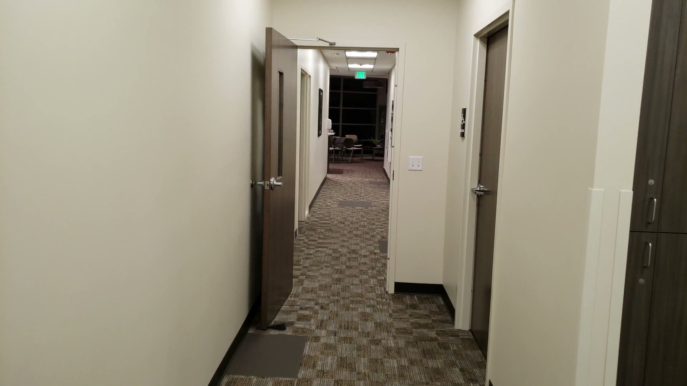
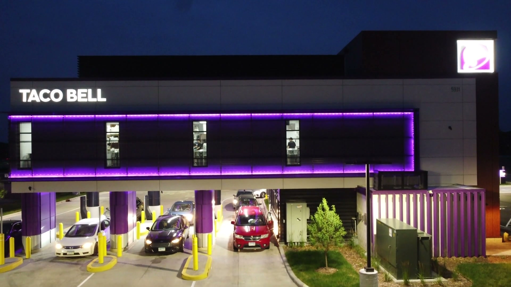
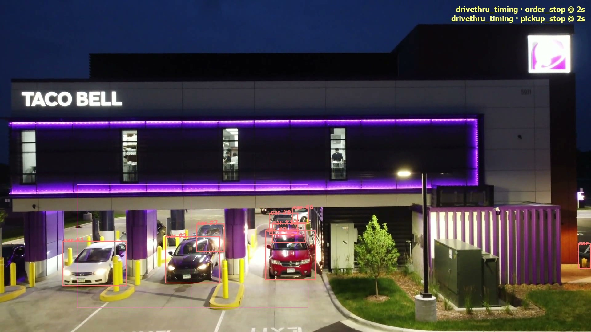

تنظيف دورة المياه
دخول الموظف في الشفت المحدد له، وتسجيل بياناته قبل الدخول أو بعده، وبلا كاميرا داخل الحمام.
تفاصيل الحالةخمس حالات تشغيلية يقرأها النظام من كاميراتك ويرسلها لك كتقرير: تنظيف دورة المياه في شفته المحددة، تنظيف المكائن في ساعاتها، تواجد الموظف وقت وجود العميل مع استثناء البريك، رحلة الدريڤ ثرو من الطلب حتى الاستلام بالثانية، وتنظيف الطاولات بعد انتهاء العملاء.
 كاميرا ثابتة على المسار
كاميرا ثابتة على المسار
هذي الحالات اللي نبدأ بها في كل محل، وكلها مضبوطة من نفس المحرك، وتوسّعها لأي حالة تبيها.
دخول الموظف في الشفت المحدد له، وتسجيل بياناته قبل الدخول أو بعده، وبلا كاميرا داخل الحمام.
تفاصيل الحالةفي ساعات محددة من اليوم، وبأداة التنظيف نفسها داخل المنطقة، حتى لو الموظف نصف ظاهر.
تفاصيل الحالةكل دقيقة فيها عميل في الصالة، هل فيه موظف يغطي؟ والبريك مستثنى من الحساب.
تفاصيل الحالةمن لحظة الطلب إلى لحظة الاستلام، وزمن كل سيارة، وطول الصف، وسيارة معلّقة عند السماعة.
تفاصيل الحالةبعد انتهاء العملاء من الطاولة، ووصول الموظف لها، وزمن الانتظار لكل طاولة.
تفاصيل الحالةنفس المحرك يضبط أي حالة عندك، من غياب الموظف عن موقعه إلى مندوب التوصيل المنتظر.
ناقشها معنابلا كاميرا داخل الحمام، القرار يبنى على الممر ونقطة التسجيل
عبور الموظف لمدخل دورة المياه داخل نافذة الشفت المحدد له، ووقوفه عند نقطة التسجيل قبل الدخول أو بعده.
زيارة موثّقة بلقطتين ووقت الدخول، أو تنبيه إذا انتهى الشفت بلا أي دخول مسجّل.

ساعات محددة، وأداة التنظيف نفسها تشهد
مكوث أداة التنظيف داخل منطقة المكائن للمدة المطلوبة داخل النافذة الزمنية، حتى لو الموظف ظاهر بشكل جزئي أو محجوب.
«تم» مع مدة التنظيف والأداة المرصودة، أو «لم يتم» لحظة انتهاء النافذة بلا تنظيف.
نسبة تغطية بالساعة، والبريك خارج الحساب
لكل دقيقة فيها عميل في منطقة العملاء، هل يوجد موظف في منطقة الخدمة، وتُستثنى نوافذ البريك والفترات بلا عملاء.
نسبة التغطية لكل ساعة، ولقطات لأطول الفترات اللي بقي فيها العميل بلا تغطية.
من الطلب حتى الاستلام، ولكل سيارة على حدة
تتبع كل سيارة عبر مناطق المسار، وزمن الوقوف عند الطلب، وزمن الخدمة عند النافذة، وطول الصف لحظة بلحظة.
جدول لكل سيارة: وقت الطلب، وقت الاستلام، والفرق بينهما، مع تنبيه للسيارة المعلّقة عند السماعة.
من خروج العميل إلى وصول الموظف
خلو الطاولة من العملاء للمدة المحددة، ثم وصول موظف إليها، وزمن الانتظار بين الحالتين.
زمن التنظيف لكل طاولة بعد انتهاء العملاء، ومخالفة إذا تجاوزت المهلة المضبوطة.
اسحب الخط: على اليمين ما تراه الكاميرا وحدها، وعلى اليسار نفس اللحظة بمناطق الحالة وسياراتها داخل المسار.


بلا أجهزة جديدة وبلا تغيير في طريقة شغل الفريق.
نشتغل على الكاميرات الموجودة عندك. بلا تعرّف على الوجوه وبلا بيانات شخصية، النظام يتابع الحالات لا الأشخاص.
منطقة كل حالة، ساعات التنظيف، نوافذ البريك، ومهل التغطية. كل هذا يُضبط من ملف واحد لكل كاميرا، وبلا أي إعادة تدريب.
سجل يومي لكل حالة بلقطتها ووقتها، وتنبيه في اللحظة إذا انكسرت حالة أو تجاوزت مهلة مضبوطة.
ثلاث باقات تغطي الطريق كامل: من نقطة تسليم واحدة إلى فروع متعددة بلوحة مجمعة. السعر يُحدَّد بعد جلسة العرض، وقبل أي التزام.
على الطلب كاميرا واحدة
على الطلب حتى 4 كاميرات
على الطلب حتى 12 كاميرا
جلسة واحدة على محلّك، نشوف فيها مشهدًا حقيقيًا من كاميراتك، ونرسم المناطق أمامك، ونطلع بأول سجل لغرض واحد. عشرون دقيقة تكفي لتعرف إن كانت الفكرة تستحق.
احجز عرضًا على محلّك